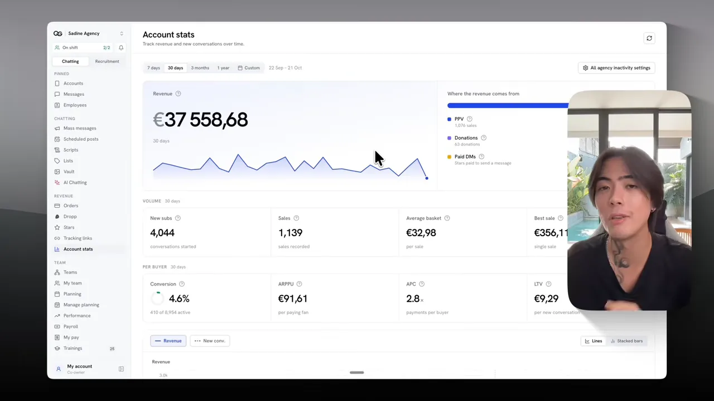
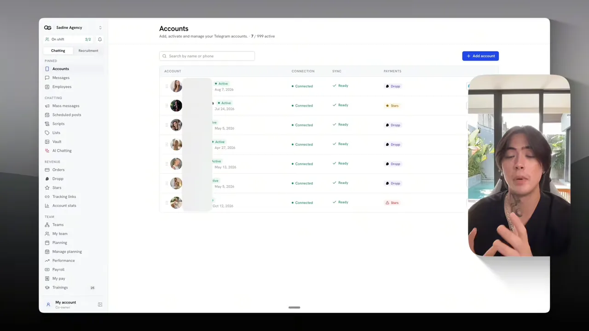
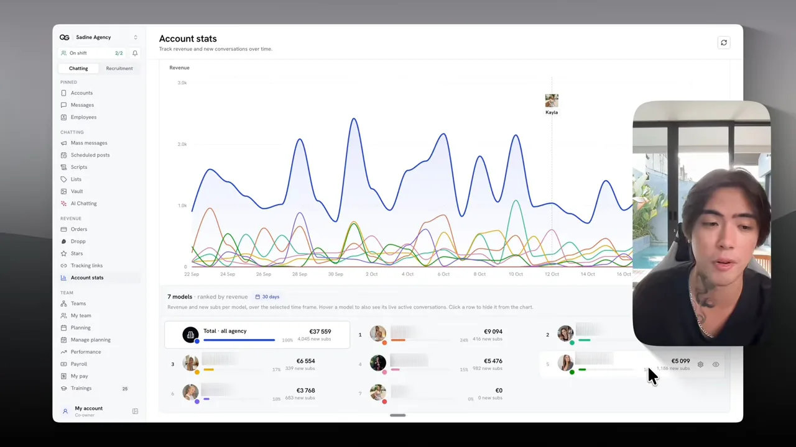
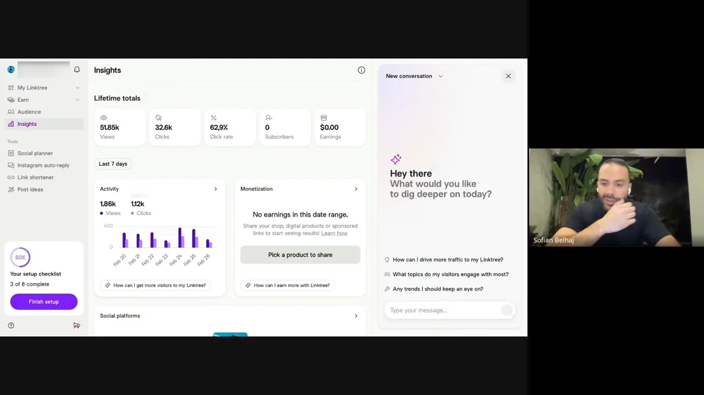

이 영상이 말하는 것
발표자는 새 AI 인플루언서 한 명으로 첫 달에 7~8천 달러를 벌 수 있다는 말로 시작해요. 근거로 자기 대행사의 매출 대시보드를 보여 줘요. 왼쪽 위 큰 숫자가 9월 22일부터 10월 21일까지 30일 매출 €37,558.68이에요. 오른쪽 'Where the revenue comes from'을 보면 매출이 세 갈래로 나뉘어요. 유료 콘텐츠인 PPV(Pay-Per-View) 1,076건, 후원(Donations) 63건, 메시지를 보내려고 내는 유료 메시지('Paid DMs')예요.

대시보드 아래쪽 숫자도 읽어 둘 만해요. 한 달에 새로 대화를 시작한 사람이 4,044명이고, 판매는 1,139건이에요. 화면의 ARPPU(Average Revenue Per Paying User) 칸을 보면 돈을 낸 사람 한 명이 평균 €91.61을 썼어요. 숫자의 무게가 '얼마나 많이 보였나'보다 '대화한 사람 중 몇 명이 샀나'에 실려 있다는 점이 뒤에 나오는 주장과 이어져요.
대부분이 실패하는 지점
발표자가 말하는 실패 패턴은 이래요. 캐릭터를 만들고 판매 계정을 연 뒤, 첫 게시물부터 팔려고 해요. 그러면 조회수가 몇천에서 멈춰요. 어쩌다 한 편이 터지면 며칠 뒤 계정이 정지돼요. 몇 주 작업이 통째로 사라진대요.
그래서 이 영상은 '어떻게 만드나'보다 '어떻게 팔고 지키나'에 시간을 써요. 발표자는 휴대폰 50대를 늘어놓은 작업실 같은 장비는 필요 없고, 맞는 방법과 휴대폰 한 대면 된다고 말해요.
직장인 소피앙의 사례
영상의 뼈대는 발표자의 수강생 소피앙(Sofian Belhaj)의 이야기예요. 그는 대학을 한 번 그만두고 경제학 학사를 마친 뒤, 캐나다에서 원격 영업직으로 일했어요. 월급은 세후 4천 달러 정도였어요. 나쁘지 않은 돈이지만 발표자는 바로 그게 함정이라고 말해요. 편할 만큼은 주지만 자유로워질 만큼은 주지 않아서, 매년 "내년엔 그만둬야지"만 반복하게 된다는 거예요.
강의를 세 번 바꾸고, 채널을 하나로 줄이기
소피앙은 이 일을 하려고 강의를 세 개 들었어요. 앞의 두 개가 맞지 않았을 때도 "사업이 틀린 게 아니라 강의가 틀렸다"고 생각했대요. 처음엔 레딧, 트위터 등 모든 채널을 동시에 했는데, 다 하면 아무것도 안 하는 것과 같았다고 돌아봐요. 그래서 석 달 안에 월 1천 달러가 안 나오면 접겠다는 기한을 두고 다시 시작했어요.
이 숫자에서 발표자가 강조하는 건 시간이에요. 소피앙은 회의와 통화가 있는 정규직을 다니면서 하루 2시간만 썼어요. 도구에 쓴 돈도 100달러 정도였대요. 나중에는 월 15K까지 올렸고, 그중 13K가 프랑스 시장 텔레그램에서, 20~30%가 미국 시장에서 나온다고 말해요.
발표자도 월 10K를 보장하지는 않는다고 덧붙여요. 다만 같은 방향으로 가고 있는지는 알 수 있다는 정도로 말해요.
예쁜 얼굴보다 알아보는 캐릭터
소피앙에게 처음 시킨 일은 "예쁜 여자"가 아니라 "특정한 관객을 위한 특정한 여자"를 만드는 거였대요. 발표자 자신도 여러 캐릭터를 동시에 돌리며 무엇이 되는지 비교해 왔어요.
먼저 판매 창구를 보여 줘요. 화면 제목 아래에 'Add, activate and manage your Telegram accounts'와 '7 / 999 active'가 보여요. 텔레그램 계정 7개를 연결해 두었다는 뜻이에요. 맨 오른쪽 'PAYMENTS' 열에는 결제 수단이 계정마다 Dropp나 Stars로 적혀 있어요. 발표자의 캐릭터는 대부분 프랑스 시장에서 텔레그램으로 팔고, 미국 시장 캐릭터 하나만 팬뷰(Fanvue)에서 판대요. 프랑스 쪽이 더 잘 돼서 그렇게 나눴다고 해요.

가장 많이 번 캐릭터는 가장 예쁜 캐릭터가 아니에요
다음 화면은 모델별 매출 순위예요. 아래쪽 '7 models · ranked by revenue' 칸에서 1위가 €9,094, 그 아래로 €6,554, €5,476, €5,099, €3,768 순이고 마지막 모델은 €0이에요. 커서가 가리키는 5번 모델이 가장 최근에 만든 캐릭터예요. 새 구독자 1,186명으로 첫 달에 5천 유로 가까이 벌었어요.

발표자는 이 5번 모델이 나이 든 여성 콘셉트이고, 솔직히 예쁘지 않다고 말해요. 대신 늘 입는 옷, 말투, 분위기, 올리는 영상 종류가 뚜렷해요. 그래서 사람들이 피드에서 바로 알아보고 다시 찾아온대요. 완벽한 얼굴과 피부에 몇 주를 쓰면, 인스타그램의 다른 1만 명의 예쁜 AI 여성과 똑같아질 뿐이라는 거예요.
비유는 바하마 해변의 스노보드 가게예요. 보드가 아무리 좋아도 해변에선 아무도 스노보드를 찾지 않아요. 흔한 예쁜 얼굴은 해변의 스노보드고, 처음 보는 스타일이 스크롤을 멈추게 한대요. 미모는 첫 번째 눈길을 받고, 성격이 두 번째 눈길을 받는데, 돈은 두 번째에서 나온다고 해요.
소피앙의 니치: 쌍둥이와 그 룸메이트
소피앙은 빨리 터지려면 좋은 니치를 골라야 한다고 믿었대요. 그래서 프랑스 시장에 없던 쌍둥이 캐릭터를 먼저 만들었어요. 한 캐릭터의 콘텐츠를 복제하면 되니 만들기도 쉬웠대요. 이게 수백만 조회수를 냈고, 다음엔 쌍둥이의 '룸메이트'라는 설정으로 새 캐릭터를 붙였어요. 프랑스에 사는 북아프리카 출신 19세 트랜스 여성이라는 설정이에요. 소피앙은 "이 사람이 트랜스라고?" 하는 놀라움을 노렸다고 말하고, 2주 만에 릴스가 수백만 조회수를 냈대요.
이 대화 중에 소피앙 쪽 화면으로 링크트리 통계가 나와요. 'Lifetime totals'에 조회 51.85k, 클릭 32.6k, 클릭률 62.9%가 찍혀 있어요. 오른쪽 'Earnings'는 $0.00이에요.

진짜처럼 보이는 영상은 따라 하기로
발표자는 틱톡에서 수백만 조회수를 내는 실제 여성들의 영상을 떠올려 보라고 해요. 손에 든 폰, 살짝 흔들리는 화면, 침실의 평범한 조명, 친구와 영상통화하듯 말하는 모습이에요. 완벽한 게 하나도 없는데, 그래서 진짜 같고 그래서 먹힌대요.
AI로 만든 영상은 반대예요. 너무 깨끗하고 매끈해서 영화 같아요. 플라스틱 같은 피부, 공중에 떠 있는 카메라, 깜박이지 않는 눈이 문제래요. 사람들은 이유를 설명하지 못해도 0.5초 만에 그걸 느끼고 넘겨 버린다고 해요.
프롬프트 대신 '히트곡 고르기'
예전에는 진짜 같은 영상 한 편을 만들려면 아주 긴 프롬프트, 이른바 JSON(JavaScript Object Notation) 프롬프트를 써야 했대요. 발표자는 이걸 40년 전 사진에 비유해요. 필름, 암실, 약품, 며칠의 기다림이 필요하던 일이 이제 화면 한 번 누르는 일이 됐다는 거예요.
두 번째 비유는 노래방이에요. 노래방에서 신곡을 쓰는 사람은 없고, 다들 아는 히트곡을 골라 부르죠. 바이럴 영상도 같대요. 매일 수천 편의 영상이 수백만 조회수로 이미 검증돼 있으니, 그중 하나를 골라 내 캐릭터가 '부르게' 하면 된다는 거예요.
시연에서 발표자는 실제 여성이 올린 영상 하나를 고르고, 캐릭터만 자기 AI 인플루언서로 바꿔 같은 장면을 만들어요. 방법은 이렇게 말해요. AI 영상 도구에서 video로 가서 Replace를 누르고, 품질은 비싼 것 말고 standard를 고른대요. 따라 할 영상을 올리고, 캐릭터 참고 이미지를 올리면 끝이에요. 발표자는 이 도구의 MCP(Model Context Protocol)를 Claude에 연결해 두고, 인스타그램 릴스 링크만 Claude에 보낸다고 말해요.
15:29 무렵 화면에는 이 도구의 모델 선택 메뉴가 열려 있어요. 메뉴에 적힌 내용을 옮기면 이래요.
| 모델 | 메뉴에 적힌 설명 | 초당 비용 표시 |
|---|---|---|
| Cinematic | Start and end frame, multi-scene | 42–63 / s |
| Seedance 2.0 | References or frames, up to 15 s | 45–240 / s |
| Seedance 2.5 | Up to 30 s, more references | 65–270 / s |
| Omni | References and clip, up to 4K | from 300 |
| Replace (선택됨) | Your character in a clip | 30–185 / s |
아래 설정 줄은 Replace, 720p, 'Standard ~6 min'으로 맞춰져 있어요. 도구 이름은 화면에 나오지 않아요. 결과물은 폰으로 찍은 듯한 세로 화면에, 자연광, 약간의 어설픔까지 살아 있어서 방에서 혼자 찍은 실제 영상처럼 보인다고 발표자는 말해요.
copy the others by doing better than them
남들 걸 베끼되, 더 잘해서 베끼라는 말이에요.
— 소피앙, 영상 15:54
소피앙도 같은 방식을 써요. 터진 릴스 하나에서 영감을 얻어 자기 모델로 복제하고, 더 좋은 음악과 더 좋은 캡션을 붙이면 "그냥 수학"처럼 터진다고 말해요. 한 편이 100만 조회수를 넘으면 같은 유행, 같은 영상을 다시 만들어요. 발표자는 이렇게 일주일에 팔로워 5천 명, 2주가 안 돼 1만 명을 모았대요.
매일 올리고, 터진 영상은 다시 쓰기
이 구간은 소피앙이 자기 운영 방식을 직접 말하는 부분이에요. 처음엔 띄엄띄엄 올리다가, 하루 두 편씩 하루도 빼지 않고 올리기 시작했대요. 그 뒤로 2주 동안 매일 새 사람이 들어와서 월말인데도 월말 같지 않았다고 말해요. "많이 올릴수록 많이 번다"가 그의 요약이에요.
규칙도 하나 덧붙여요. 휴대폰 한 대에 계정은 세 개를 넘기지 말래요.
터진 릴스는 한 번 더 쓴다
소피앙이 폰으로 보여 준 바이럴 릴스는 대부분 유행 음악 위에 화면 글자만 얹은 영상이에요. 15만 조회수가 난 한 편도 음악에 맞춰 '드롭'이 올 때 다른 문구로 바꾼 게 전부래요. 계정이 정지될 때 가장 많이 터진 릴스들은 지워서 남아 있지 않다고 해요.
근거는 인스타그램 통계예요. 그의 릴스를 본 사람 중 90%, 많게는 99%가 팔로워가 아니래요. 같은 영상을 다시 올려도 대부분 처음 보는 사람에게 닿으니, 공짜로 새 손님을 얻는 셈이라는 논리예요. 확대하고 음악만 바꿔도 인스타그램이 알아채지 못한다고 말해요.
발표자도 앞에서 같은 이야기를 해요. 이런 영상을 보는 사람의 90%가 처음 보는 사람이라, 영상 한 편 한 편이 공짜 광고라는 거예요. 이커머스나 드롭쉬핑에선 이런 노출에 수천 달러를 낸다고 비교해요.
조회수가 아니라 대화에서 돈이 나와요
잘 나가던 소피앙에게 큰일이 생겨요. 모든 SNS(Social Networking Service) 계정이 정지돼 새 손님이 0명이 된 거예요. 그런데 그달 매출은 12K로 그대로였대요. 소피앙 자신도 믿기지 않았다고 말해요. 텔레그램 채널에 이미 모아 둔 수천 명이 계속 사 줬기 때문이에요. 유입이 한두 달 끊겨도, 그 전에 쌓은 사람들이 다시 일어설 시간을 벌어 준다는 거예요.
조회수가 곧 돈이라는 착각
발표자는 이걸 설명하려고 가장 흔한 믿음부터 깨요. "조회수가 많으면 돈도 많다"는 믿음이에요. 하루 수백만 조회를 내고도 500달러를 못 버는 사람이 있고, 첫 달에 팔로워 2만 명을 모으고도 월 1천 달러가 안 되는 사람이 찾아온대요.
그 믿음으로 시작하면 이렇게 흘러간대요. 영상이 50만, 100만 조회를 넘겨 들뜨지만, 월말 매출은 40달러나 100달러예요. 그래서 더 올리고, 계정을 더 열고, 결국 캐릭터가 덜 예뻐서라며 지우고 처음부터 다시 만들어요. 끝내 "이 사업은 가짜"라고 결론 내리고 그만둔다는 거예요.
고속도로 옆 가게와 골목 카페
발표자의 비유는 이래요. 하루 수백만 대가 지나가는 고속도로 옆 가게에는 거의 아무도 들르지 않아요. 다들 너무 빨리 달리고, 다른 곳으로 가는 중이니까요. 반면 조용한 골목 카페에는 단골이 50명뿐이지만, 매일 아침 와서 주인과 이름을 부르며 이야기해요. 돈을 더 버는 건 언제나 카페라는 거예요.
그래서 매출의 80%는 대화에서 나온다고 해요. 대화, 관계, 그리고 상대가 진짜 여성과 이야기하고 있다고 느끼는 순간이 돈이 되는 순간이래요. 나머지 20%만 유입에서 나오는데, 그것도 폭발적인 유입이 아니라 매일 조금씩 쌓이는 새 사람이에요. 바이럴 한 편은 사흘이면 빠지는 홍수이고, 매일 흐르는 작은 물줄기는 옆에 마을을 세울 수 있는 강이라고도 비유해요.
앞서 13:00 무렵 화면의 주문 목록에는 판매마다 'REPORTER' 열이 있는데, 대부분 'AI Chatter'로 적혀 있어요. 대화로 판매하는 일의 상당 부분을 AI가 맡고 있다는 뜻으로 읽혀요. 발표자는 대화 내용은 유튜브에서 보여 줄 수 없다며 자세히 설명하지 않아요. 영상 13:00에서 보기
처음 한 달은 팔지 말고 모으기
소피앙은 인스타그램 팔로워 1만 명, 텔레그램 6~7천 명이 모인 뒤에야 '좋은 손님'을 고르기 시작했대요. 캐릭터 설정을 나이 든 백인 남성만 만나는 북아프리카 여성으로 바꿔, 돈을 쓸 사람이 모이도록 다시 다듬었다고 말해요. 처음부터 파는 대신, 먼저 사람을 모은 거예요.
링크를 뺐더니 조회수가 백 배
발표자는 자기 실패담을 들려줘요. 두 달 전 새 캐릭터를 열면서 첫날부터 프로필에 판매 링크를 걸었더니, 영상마다 3천 조회 안팎에 머물렀대요. 어느 날 링크만 뺐는데 같은 캐릭터, 같은 종류의 영상이 30만, 100만, 200만 조회까지 갔고, 2주 만에 팔로워 1만 명이 생겼어요.
그다음이 실수였대요. 조회수가 많으니 링크를 다시 걸어 더 팔자고 생각했어요. 링크를 건 순간, 300만 조회가 난 영상 다음 편이 2천 조회로 떨어졌어요. 며칠 뒤 계정은 정지됐고, 그 계정은 잃었대요. 지금 남은 건 스크린숏 한 장뿐이라고 해요.
왜 그런지에 대한 두 비유
첫 번째는 생일 파티예요. 모르는 사람이 내 생일 파티에 와서 5분 만에 자기 생일 파티를 홍보하고 선물을 달라고 하면, 다들 이상한 사람 보듯 하고 다시는 부르지 않죠. 첫날부터 파는 새 계정이 사람들과 알고리즘에게 그렇게 보인다는 거예요.
두 번째는 은행 계좌예요. 막 만든 계좌에 사흘 만에 5만 달러가 들어오면 은행은 계좌를 묶어요. 잘못해서가 아니라 아직 믿을 수 없어서예요. 몇 주 동안 진짜 팔로워와 댓글, 대화가 쌓인 계정은 다르게 대접받는다고 해요.
한 달 모으고, 월초에 연다
그래서 발표자의 순서는 '카페를 먼저 짓고 문을 연다'예요. 소피앙은 식당 비유로 같은 말을 해요. 공사 중인 식당에서 샌드위치를 팔지 않는 것처럼, 관객과 캐릭터 이미지를 다 만든 뒤에 판매를 시작하래요.
flowchart LR A["첫 달: 판매 없이 관객 모으기"] --> B["텔레그램 채널 1,000명"] B --> C["개인 대화 오픈 날짜 예고"] C --> D["월초에 판매 시작"]
예고도 전략이에요. "한 달 뒤에 개인 대화를 시작할게, 준비됐지?" 하고 기다리게 만든 뒤, 그달 1일에 여는 거예요. 50유로를 당장 벌려고 서두르지 말고 길게 보라고 말해요.
채널을 나눠 두기
마지막으로 소피앙은 정지에 대비한 방법을 말해요. 텔레그램 채널을 네 개로 나눠 두었더니, 하나가 정지돼도 세 개가 살아 있어서 매달 같은 매출을 유지할 수 있었대요.